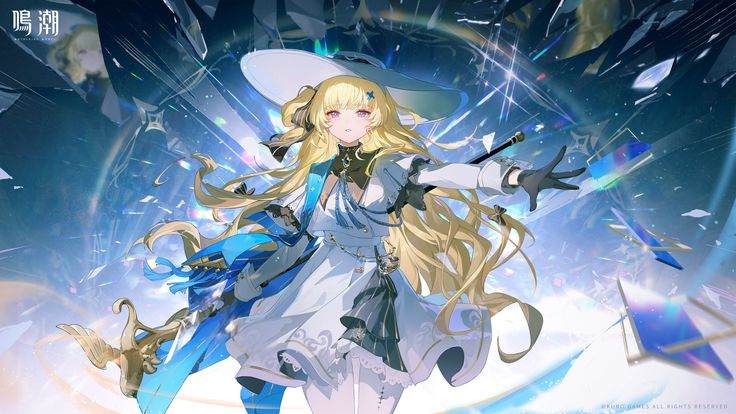
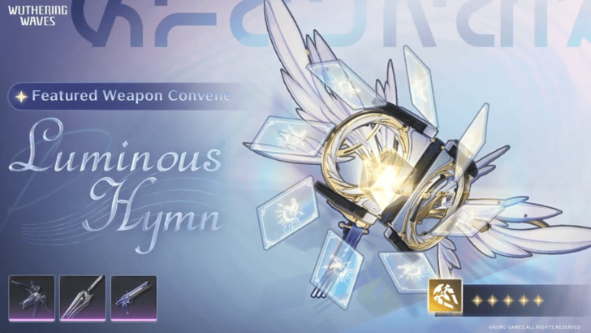
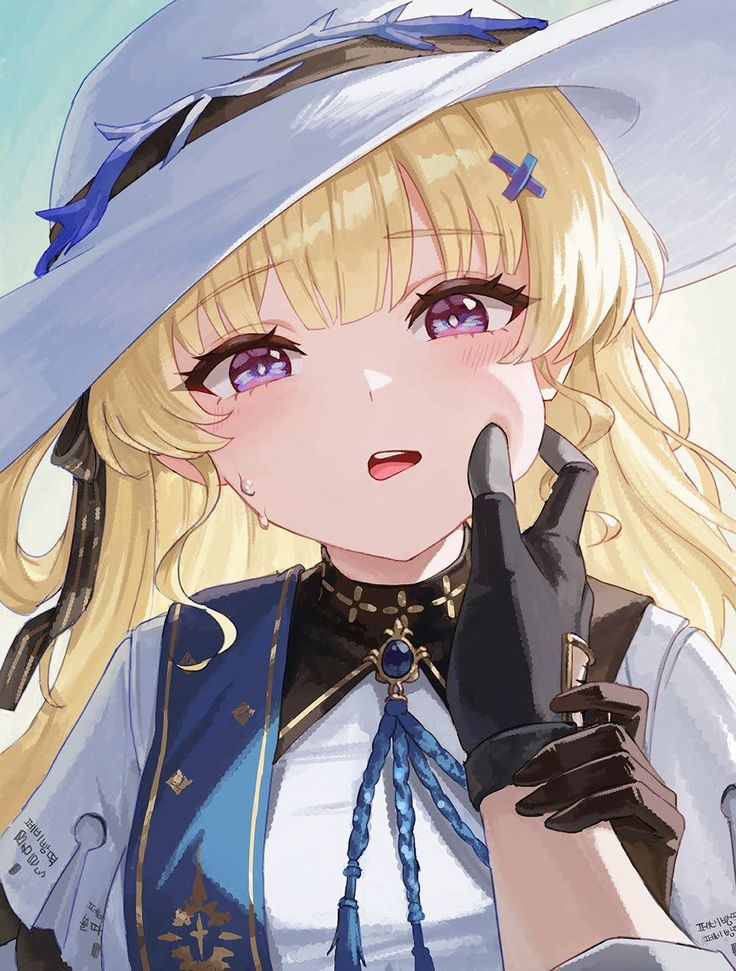

Wuthering Waves

Phoebe adalah salah satu karakter yang dapat dimainkan di Wuthering Waves . Ia dikenal karena penampilannya yang elegan, kepribadiannya yang tenang, serta desain karakter yang mengusung nuansa religius dan kesucian. Perpaduan tersebut membuat Phoebe memiliki identitas visual yang mudah dikenali oleh para pemain. Salah satu ciri khas Phoebe adalah penggunaan warna putih dan emas pada kostumnya. Kombinasi warna tersebut memberikan kesan anggun dan berwibawa, sementara berbagai ornamen yang menghiasi pakaiannya semakin memperkuat tema cahaya dan kesucian yang menjadi ciri khasnya.
Di komunitas Wuthering Waves, Phoebe sering dipuji karena animasi serangan dan efek visualnya yang memukau. Setiap gerakan yang disertai efek cahaya membuat gaya bertarungnya terlihat elegan sekaligus memberikan pengalaman visual yang menarik bagi pemain. Sejak pertama kali diperkenalkan, Phoebe menjadi salah satu karakter yang paling banyak diperbincangkan. Trailer resmi, artwork promosi, dan berbagai materi pemasaran mengenai dirinya berhasil menarik perhatian komunitas dan meningkatkan antusiasme pemain menjelang perilisannya.
Bagi banyak penggemar, daya tarik Phoebe tidak hanya terletak pada kemampuannya dalam pertempuran, tetapi juga pada perpaduan desain karakter, tema cerita, dan kualitas artistik yang membuatnya tampil berbeda dibandingkan karakter lainnya di Wuthering Waves.

Luminous Hymn adalah senjata bertipe Rectifier yang dirancang khusus untuk memaksimalkan potensi Phoebe di Wuthering Waves. Sebagai senjata khas (signature weapon), Luminous Hymn memiliki atribut dan efek yang sangat selaras dengan gaya bermain Phoebe, sehingga mampu meningkatkan performanya baik sebagai pemberi damage maupun pendukung tim.
Selain memberikan peningkatan pada statistik dasar, efek pasif Luminous Hymn berfokus pada peningkatan kemampuan bertarung melalui bonus damage dan sinergi dengan mekanisme skill yang dimiliki Phoebe. Karena efek tersebut dirancang untuk melengkapi kit karakternya, senjata ini sering dianggap sebagai pilihan terbaik (Best-in-Slot/BiS) bagi Phoebe.

"Faith is not the absence of fear, but the courage to keep moving forward despite it." - Someone (2026) -